Source & review coverageمنبع و پوشش مرور
Review of the supplied 26-page PDF, including its four numbered figures, fifteen tables, review method, conceptual workflow, author limitations and full bibliography. Figures are displayed as original source pages with surrounding context; numerical graph coordinates are not estimated. This paper presents evidence synthesis and a conceptual architecture, not a newly validated end-to-end HEMS.مرور PDF ارائهشده در ۲۶ صفحه شامل چهار شکل، پانزده جدول، روش مرور، گردش مفهومی، محدودیت نویسندگان و کتابنامه است. تصاویر صفحه اصلی با بافت پیرامون نمایش داده شده و مختصات نمودار تخمین زده نمیشود. این مقاله ترکیب شواهد و معماری مفهومی است و سامانه HEMS تازه اعتبارسنجیشده ارائه نمیکند.
Identity, research questions & hypothesis statusمشخصات، پرسشها و وضعیت فرضیه
Zahra Rezaei, Mohammad Amin Amini and Yaser Mike Banad. Energy and AI 25 (2026),100853. The three explicit questions ask how AI/ML evolved toward LLM intelligence, which functional LLM roles and gaps exist, and which architectural patterns and challenges inform trustworthy agentic grids. There is no numbered experimental hypothesis set.زهرا رضایی، محمدامین امینی و یاسر مایک بناد؛ Energy and AI جلد ۲۵، سال ۲۰۲۶. سه پرسش صریح درباره تحول AI/ML به مدل زبانی، نقشها و شکافهای مدل و الگوهای معماری و چالشهای شبکه عاملمحور قابل اعتماد هستند. فرضیه آزمایشی شمارهدار وجود ندارد. Source · PDF p. 1Source · PDF p. 2
Systematic review method & evidence extractionروش مرور نظاممند و استخراج شواهد
The search covers Scopus, Web of Science, IEEE Xplore and ScienceDirect, with a 2019–2026 window and executable queries in Table1. Search dates are 15–16 January2026. It retains technically substantive English full texts, removes duplicate versions and excludes reviews during eligibility to focus the synthesis on primary evidence. Some recent preprints/early-access works are admitted despite the abstract’s description of a peer-reviewed corpus.جستوجو در Scopus، Web of Science، IEEE Xplore و ScienceDirect با بازه ۲۰۱۹ تا ۲۰۲۶ و تاریخ ۱۵ و ۱۶ ژانویه ۲۰۲۶ انجام شده است. پرسوجوها در جدول۱ آمدهاند. متون انگلیسی فنی حفظ، نسخههای تکراری حذف و مرورها در ارزیابی صلاحیت کنار گذاشته میشوند. برخی پیشچاپها نیز با وجود توصیف چکیده از آثار داوریشده وارد شدهاند. Source · PDF p. 3
The review reports 123 initial records,81 after initial screening and61 in final synthesis. Quality assessment considers topical/technical/architectural relevance, methodological clarity, validation and reproducibility. Coding captures LLM role, agent behavior, tools, semantic grounding, Twin integration, governance and primary/secondary layer placement. Consensus checking is described; limitations later state primary screening/extraction by one researcher with subset agreement Cohen κ=.82.مرور ۱۲۳ رکورد اولیه،۸۱ پس از غربال نخست و۶۱ اثر نهایی گزارش میکند. کیفیت با ارتباط موضوعی/فنی/معماری، وضوح روش، اعتبارسنجی و بازتولید سنجیده میشود. کدگذاری نقش مدل، رفتار عامل، ابزار، معنای زمینه، دوقلو و حکمرانی را ثبت میکند. بررسی توافق توصیف شده؛ محدودیتها غربال و استخراج اصلی توسط یک فرد و توافق زیرمجموعه با کاپای۰٫۸۲ را بیان میکنند. Source · PDF p. 4Source · PDF p. 6Source · PDF p. 24
Taxonomy, proposed architecture & implementation boundariesردهبندی، معماری و مرز پیادهسازی
The role taxonomy distinguishes interface, reasoner and agent. The six-layer synthesis covers physical/data acquisition, processing/context abstraction, LLM cognitive reasoning, multi-agent coordination, tool-augmented execution and cross-layer feedback/governance. Twin simulation and engineering validation bound proposed actions. The authors explicitly call this an author-level synthesis rather than a system implemented by any single reviewed study.ردهبندی نقشها شامل رابط، استدلالگر و عامل است. ترکیب ششلایه شامل دریافت داده فیزیکی، پردازش/زمینه، استدلال مدل، هماهنگی چندعاملی، اجرای ابزارمحور و بازخورد/حکمرانی میانلایهای است. شبیهسازی دوقلو و اعتبارسنجی مهندسی پیشنهاد کنش را محدود میکنند. نویسندگان این را ترکیب مفهومی خود و نه سامانه پیادهشده یک مطالعه مینامند. Source · PDF p. 6Source · PDF p. 7Source · PDF p. 10Source · PDF p. 11Source · PDF p. 12
The illustrative renewable-generation scenario follows data acquisition, context construction, forecast/optimization tool requests, coordination, Twin checks and human oversight. Generated outputs are decision hypotheses before engineering validation, not independently executable control commands. It provides workflow responsibilities, not executable APIs, a fitted causal graph or a numerical controller specification.سناریوی نمونه تولید تجدیدپذیر از دریافت داده، ساخت زمینه، درخواست پیشبینی/بهینهسازی، هماهنگی، آزمون دوقلو و نظارت انسانی میگذرد. خروجی پیش از اعتبارسنجی مهندسی فرض تصمیم است و فرمان کنترل مستقل نیست. مسئولیت گردش کار ارائه میشود، نه API اجرایی، گراف علّی برازششده یا مشخصات عددی کنترلگر. Source · PDF p. 12Source · PDF p. 13Source · PDF p. 14Source · PDF p. 15
Evidence, comparisons & absence of new controller experimentsشواهد، مقایسهها و نبود آزمایش کنترلگر جدید
This is not a new controller benchmark. There are no original seed-based HEMS trials, train/test controller splits or measured recovery-time comparisons for the proposed architecture. Table5 compares representative architectures qualitatively; Tables9–15 synthesize physical data, reasoning, coordination, tools, semantics, Twins and governance literature. The renewable scenario illustrates operational responsibility rather than demonstrating field performance.این اثر معیار آزمایش کنترلگر تازه نیست. آزمون HEMS با بذر، تقسیم آموزش/آزمون کنترلگر یا مقایسه زمان بازیابی اندازهگیریشده برای معماری پیشنهادی ارائه نشده است. جدول۵ معماریها را کیفی و جدولهای۹ تا۱۵ منابع داده، استدلال، هماهنگی، ابزار، معنا، دوقلو و حکمرانی را ترکیب میکنند. سناریوی تجدیدپذیر مسئولیت عملیاتی را توضیح میدهد و عملکرد میدانی را ثابت نمیکند. Source · PDF p. 9Source · PDF p. 14Source · PDF p. 17Source · PDF p. 18Source · PDF p. 19Source · PDF p. 20Source · PDF p. 21Source · PDF p. 22
The proposed architecture is assessed as a design synthesis. Heterogeneity prevents quantitative meta-analysis. Therefore reported results of individual reviewed studies cannot be treated as a pooled performance result or an improvement achieved by this architecture.معماری در قالب ترکیب طراحی ارزیابی میشود. ناهمگونی مانع فراتحلیل کمی است؛ بنابراین نتایج مطالعات مرورشده نتیجه تجمیعی یا بهبود حاصل از این معماری محسوب نمیشوند. Source · PDF p. 24
Author-stated value, limitations & research gapsارزش، محدودیتها و شکافهای بیانشده
The authors emphasize traceability from evidence to role taxonomy and architecture, numerical tools rather than standalone LLM decision making, and governance embedded across layers. Open challenges include numerical reliability, hallucinations, latency, scalability, semantic grounding, cybersecurity, standard evaluation and institutional constraints.نویسندگان ردیابی شواهد تا ردهبندی/معماری، ابزار عددی بهجای تصمیمگیری مستقل مدل و حکمرانی میانلایهای را برجسته میکنند. قابلیت اتکای عددی، توهم، تأخیر، مقیاسپذیری، زمینه معنایی، امنیت و ارزیابی استاندارد از چالشها هستند. Source · PDF p. 15Source · PDF p. 16Source · PDF p. 22Source · PDF p. 23Source · PDF p. 24
Explicit limitations: primary screening/extraction by a single researcher, selective depth-oriented61-study corpus, heterogeneous metrics preventing meta-analysis, and no empirical end-to-end validation. Future work includes efficient domain models, federated reasoning, robust agent protocols, large-scale Twins, formal verification and real-world testing.محدودیتهای صریح: غربال/استخراج اصلی تکپژوهشگر، انتخاب پیکره۶۱تایی برای عمق، ناهمگونی معیار و نبود اعتبارسنجی تجربی سرتاسری. مدل دامنه کارآمد، استدلال فدرال، پروتکل مقاوم عامل، دوقلوی بزرگمقیاس، راستیآزمایی رسمی و آزمون واقعی پیشنهاد شدهاند. Source · PDF p. 24
Key reported resultsنتایج کلیدی گزارششده
The central outputs are a61-study qualitative synthesis, a three-role taxonomy and six-layer conceptual architecture. These are review/design outputs; no numerical energy-saving or intervention-recovery effect is demonstrated for the complete proposed stack.خروجی اصلی ترکیب کیفی۶۱مطالعه، ردهبندی سهنقشی و معماری مفهومی ششلایه است. اینها خروجی مرور/طراحیاند؛ اثر عددی صرفهجویی یا بازیابی برای کل معماری نشان داده نشده است. Source · PDF p. 1Source · PDF p. 24
Figures, captions & extracted evidenceشکلها، عنوانها و شواهد استخراجشده
Figure 1
Study selectionگزینش مطالعات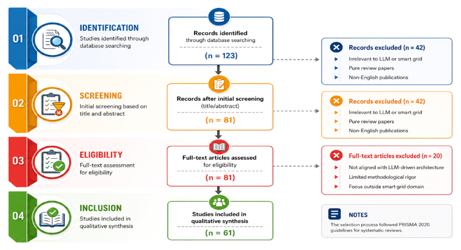
How to read this figureراهنمای خواندن شکل
Follow the selection stages and distinguish retrieved, screened, excluded and included records. These counts describe the literature corpus, not experimental participants or controller trials.مراحل انتخاب را دنبال و رکورد بازیابیشده، غربالشده، حذفشده و پذیرفتهشده را جدا کنید. این شمارش مربوط به پیکره منابع است، نه شرکتکننده یا آزمون کنترلگر.
Reader guidance · not an additional author claimراهنمای مطالعه · ادعای اضافی نویسنده نیستWhat this figure showsاین شکل چه نشان میدهد؟
The study-selection diagram links the initial123 records to the61-study final synthesis; the surrounding text records81 after first screening. Counts describe literature selection, not experimental participants.شکل۱۲۳رکورد اولیه را به۶۱اثر نهایی وصل میکند و متن۸۱اثر پس از غربال نخست را بیان میکند. شمارش مربوط به انتخاب منابع است، نه شرکتکننده آزمایش.
Reported values & evidence limitsمقادیر گزارششده و حدود شواهد
Explicit text counts:123 initial,81 first-stage retained,61 included. Do not infer unprinted exclusion breakdowns.شمار صریح متن:۱۲۳اولیه،۸۱حفظشده نخست و۶۱نهایی؛ جزئیات حذف چاپنشده استنباط نمیشود.
Figure 2
Synthesis & contextترکیب شواهد و زمینه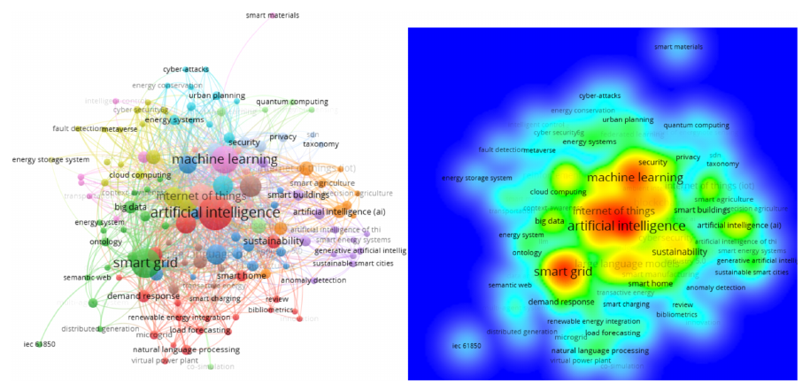
How to read this figureراهنمای خواندن شکل
Read this as an organization of concepts, dates or literature evidence. Categories and proposed directions should not be interpreted as experimental proof of a new controller or diagnostic method.این تصویر سازماندهی مفهومها، تاریخها یا شواهد منابع است. دستهها و جهتهای پیشنهادی را اثبات آزمایشی کنترلگر یا روش تشخیصی جدید تلقی نکنید.
Reader guidance · not an additional author claimراهنمای مطالعه · ادعای اضافی نویسنده نیستWhat this figure showsاین شکل چه نشان میدهد؟
Panels visualize the bibliometric research landscape; the text distinguishes this broad bibliometric corpus from the refined61-study review subset. Network proximity does not establish causal dependence or implementation effectiveness.پنلها چشمانداز کتابسنجی را نمایش میدهند؛ متن پیکره کتابسنجی گسترده را از زیرمجموعه۶۱تایی جدا میکند. نزدیکی شبکه وابستگی علّی یا اثربخشی پیادهسازی نیست.
Reported values & evidence limitsمقادیر گزارششده و حدود شواهد
No unlabeled edge weights, coordinates or cluster sizes are estimated.وزن یال، مختصات و اندازه خوشه بدون برچسب تخمین زده نمیشود.
Figure 3
Mechanism & workflowسازوکار و گردش کار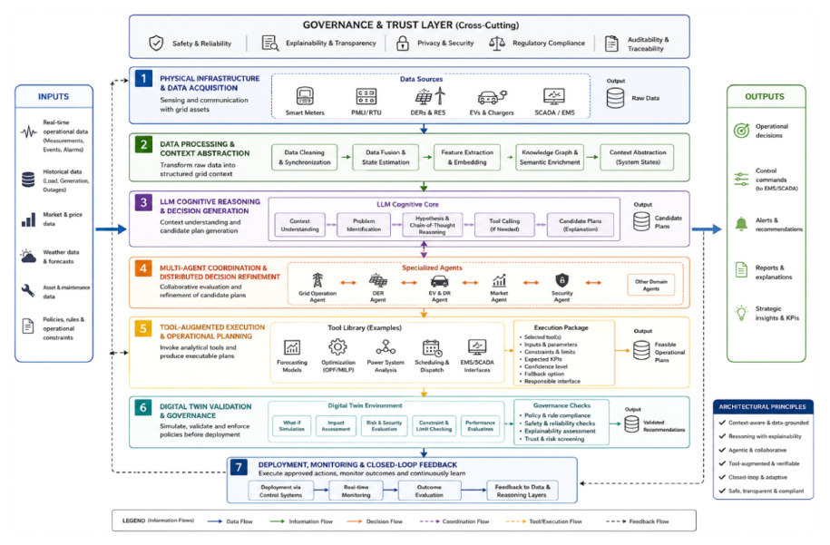
How to read this figureراهنمای خواندن شکل
Trace the inputs, processing stages and outputs, then look for feedback or validation paths. Use the accompanying explanation to distinguish the proposed design from components actually tested in the paper.ورودی، مرحله پردازش و خروجی را دنبال و مسیر بازخورد یا اعتبارسنجی را پیدا کنید. با توضیح همراه، طراحی پیشنهادی را از مؤلفه واقعاً آزمودهشده جدا کنید.
Reader guidance · not an additional author claimراهنمای مطالعه · ادعای اضافی نویسنده نیستWhat this figure showsاین شکل چه نشان میدهد؟
Shows information and decision flow from acquisition through reasoning, coordination, tools and validation, with cross-layer governance. It is a proposed workflow, not a measured causal model.جریان داده و تصمیم از دریافت تا استدلال، هماهنگی، ابزار و اعتبارسنجی با حکمرانی میانلایهای نمایش داده میشود. این گردش پیشنهادی است و مدل علّی اندازهگیریشده نیست.
Reported values & evidence limitsمقادیر گزارششده و حدود شواهد
Conceptual diagram; no numerical experiment data.نمودار مفهومی است و داده عددی آزمایش ندارد.
Figure 4
Mechanism & workflowسازوکار و گردش کار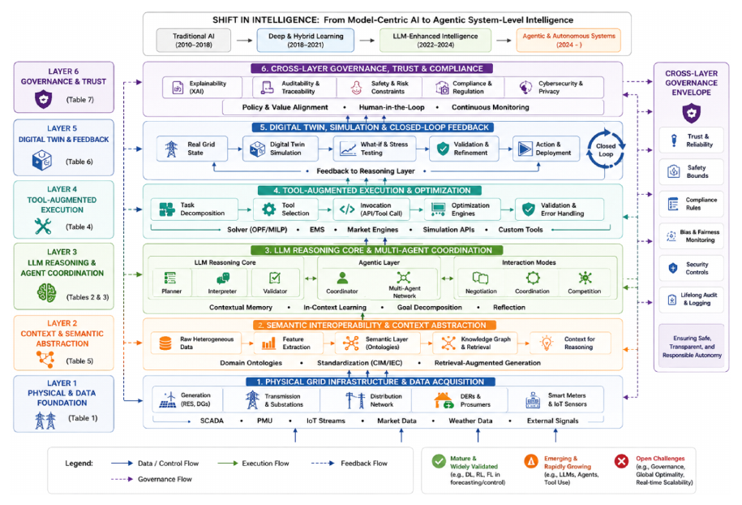
How to read this figureراهنمای خواندن شکل
Trace the inputs, processing stages and outputs, then look for feedback or validation paths. Use the accompanying explanation to distinguish the proposed design from components actually tested in the paper.ورودی، مرحله پردازش و خروجی را دنبال و مسیر بازخورد یا اعتبارسنجی را پیدا کنید. با توضیح همراه، طراحی پیشنهادی را از مؤلفه واقعاً آزمودهشده جدا کنید.
Reader guidance · not an additional author claimراهنمای مطالعه · ادعای اضافی نویسنده نیستWhat this figure showsاین شکل چه نشان میدهد؟
Synthesizes physical infrastructure, semantic context, cognitive reasoning, agent roles, tool execution and feedback/governance. Read with the implementation and maturity limits of Tables6–8.زیرساخت، زمینه معنایی، استدلال، نقش عامل، ابزار و بازخورد/حکمرانی را ترکیب میکند؛ باید همراه محدودیت پیادهسازی و بلوغ جدولهای۶تا۸ خوانده شود.
Reported values & evidence limitsمقادیر گزارششده و حدود شواهد
Six-layer design abstraction; no timing or accuracy values are inferred.انتزاع طراحی ششلایه است؛ زمان یا دقت از آن استنباط نمیشود.
Tables & numerical evidenceجدولها و شواهد عددی
Table 1 · Search strategies and queriesراهبرد و پرسوجوی جستوجو
Four databases, query fields, publication filters,2019–2026 period and January2026 search dates.چهار پایگاه، میدان پرسوجو، فیلتر،بازه۲۰۱۹تا۲۰۲۶ و تاریخ ژانویه۲۰۲۶.
Table 1 · PDF p. 3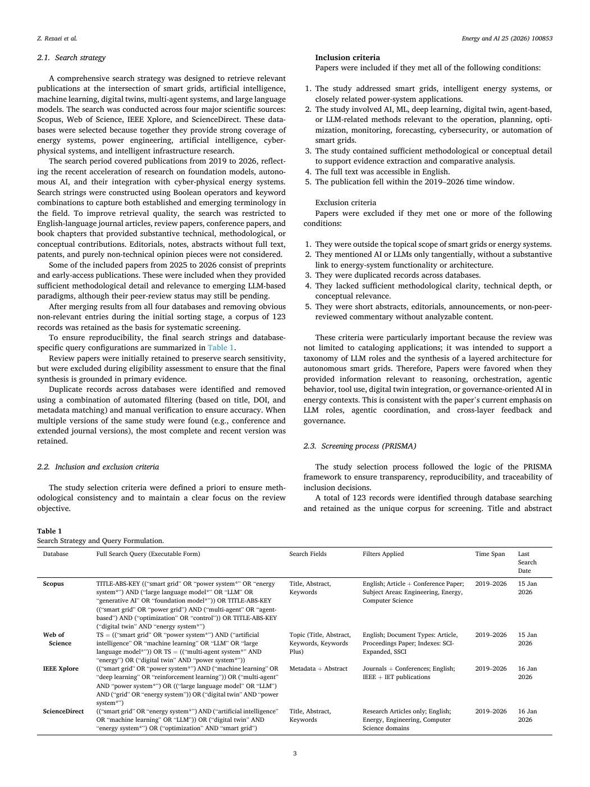
Table 2 · Quality assessmentارزیابی کیفیت
Criteria cover topical, technical, architectural, methodological, validation and reproducibility information.معیارها ارتباط موضوعی/فنی/معماری،روش،اعتبارسنجی و بازتولید را پوشش میدهند.
Table 2 · PDF p. 6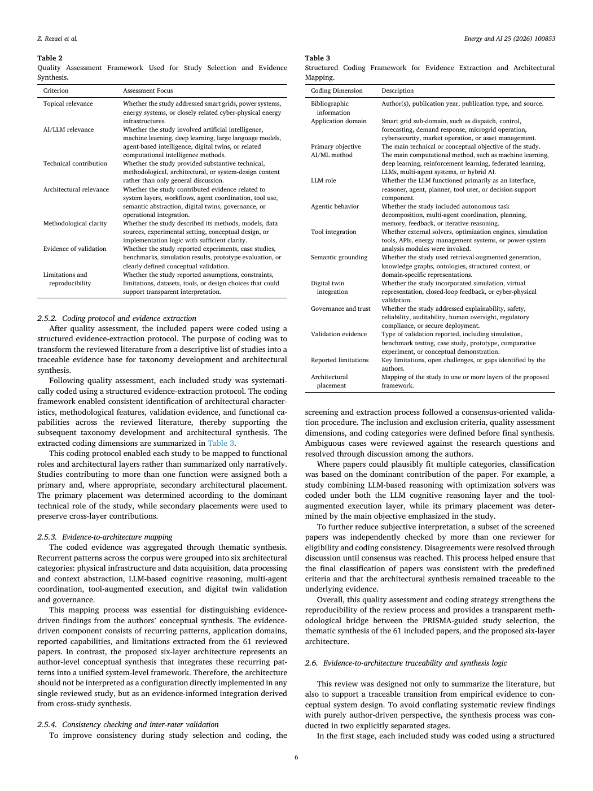
Table 3 · Structured coding dimensionsابعاد کدگذاری
Fields include LLM/agent role, tool use, semantics,Twin integration,governance,validation and layer placement.فیلدها نقش مدل/عامل، ابزار،معنا،دوقلو،حکمرانی،اعتبارسنجی و جایگاه لایهاند.
Table 3 · PDF p. 6Table 4 · Evidence-extraction frameworkچارچوب استخراج شواهد
Standardizes extracted evidence to connect individual studies to synthesis and architecture.شواهد را برای اتصال مطالعه منفرد به ترکیب و معماری استاندارد میکند.
Table 4 · PDF p. 7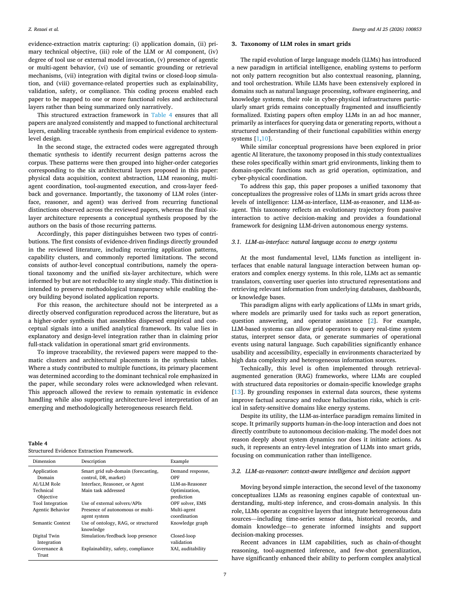
Table 5 · Representative architecture comparisonمقایسه معماریهای نماینده
Qualitative comparison of existing approaches and limitations; not a matched experiment.مقایسه کیفی رویکردها و محدودیتها است و آزمایش همسان نیست.
Table 5 · PDF p. 9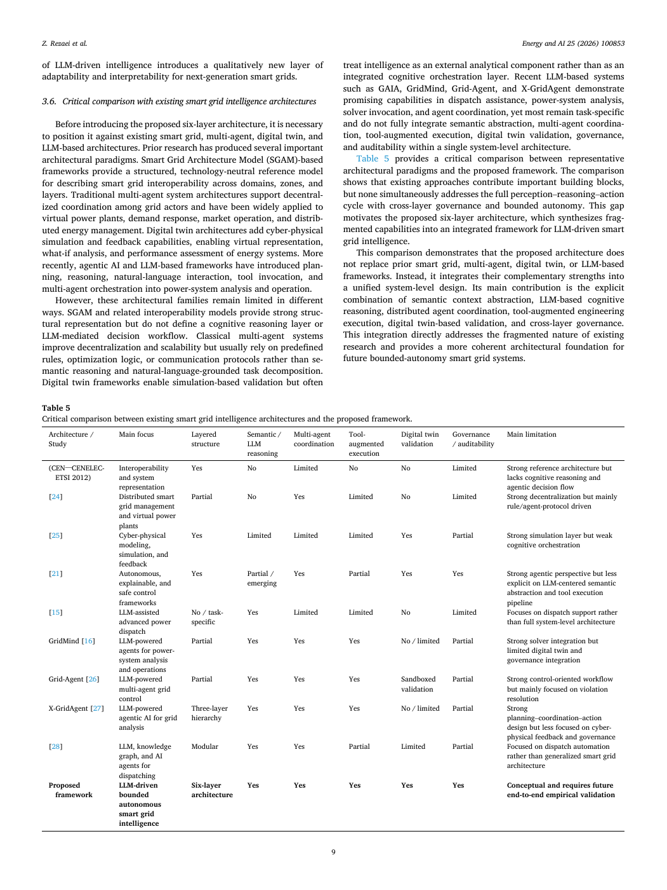
Table 6 · Operational roles and outputsنقشها و خروجی عملیاتی
Maps the renewable-management scenario across layers and validation responsibilities.سناریوی مدیریت تجدیدپذیر را به لایه و مسئولیت اعتبارسنجی نگاشت میکند.
Table 6 · PDF p. 14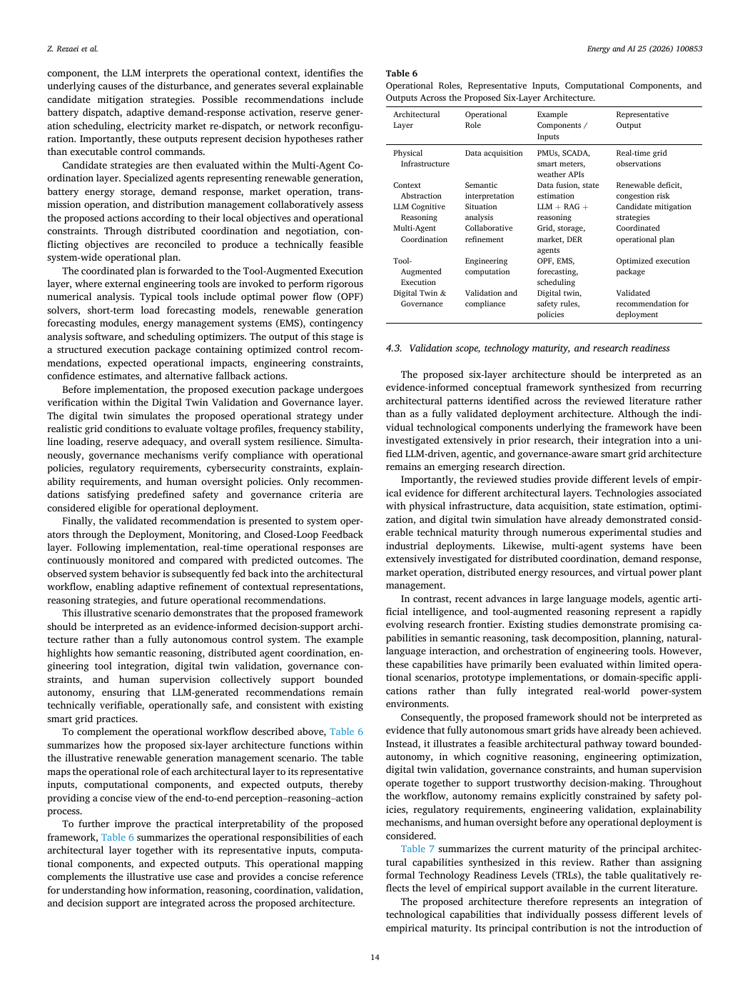
Table 7 · Architecture maturityبلوغ معماری
Qualitative evidence maturity, not formal technology-readiness levels or demonstrated stack performance.بلوغ کیفی شواهد است،نه سطح رسمی آمادگی فناوری یا عملکرد ثابتشده کل سامانه.
Table 7 · PDF p. 15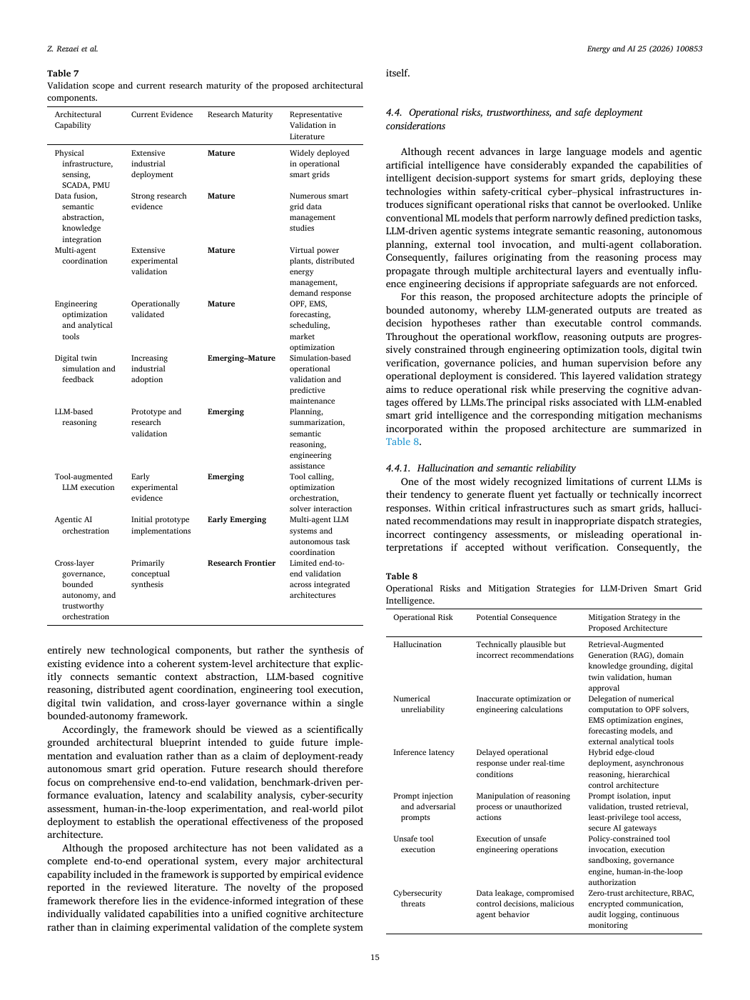
Table 8 · Bounded autonomy and governanceخودمختاری محدود و حکمرانی
Defines engineering checks and human oversight before control execution.کنترل مهندسی و نظارت انسانی پیش از اجرا را مشخص میکند.
Table 8 · PDF p. 15Table 9 · Physical/data literatureمنابع زیرساخت و داده
Source studies supporting perception and acquisition; heterogeneous devices and tasks.مطالعات دریافت و حسگری با تجهیزات و وظایف ناهمگون.
Table 9 · PDF p. 17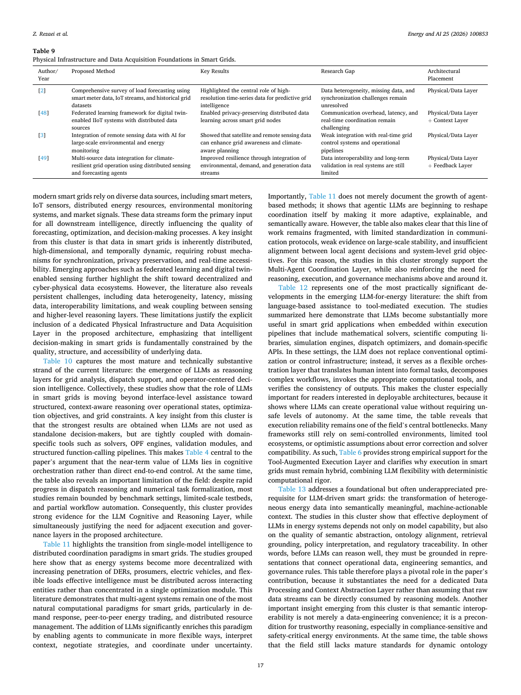
Table 10 · LLM reasoning literatureمنابع استدلال مدل
LLM reasoning and operator support evidence; numerical tool dependence remains relevant.شواهد استدلال و پشتیبانی اپراتور؛وابستگی به ابزار عددی مهم است.
Table 10 · PDF p. 18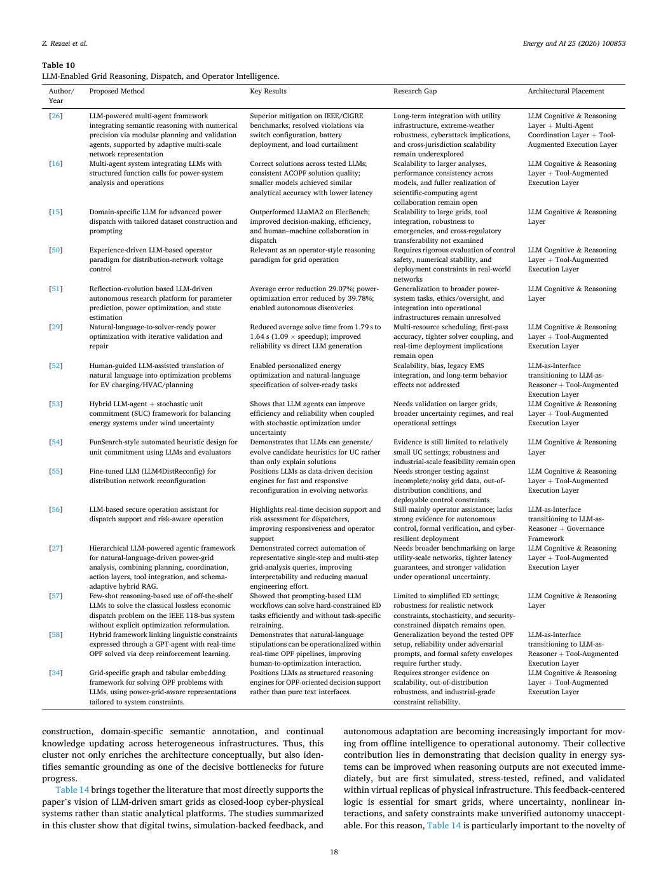
Table 11 · Multi-agent coordination literatureمنابع هماهنگی چندعاملی
Compares coordination across applications; no proof that more agents always improve outcomes.هماهنگی در کاربردهای مختلف؛اثبات بهبود همیشگی با عامل بیشتر نیست.
Table 11 · PDF p. 19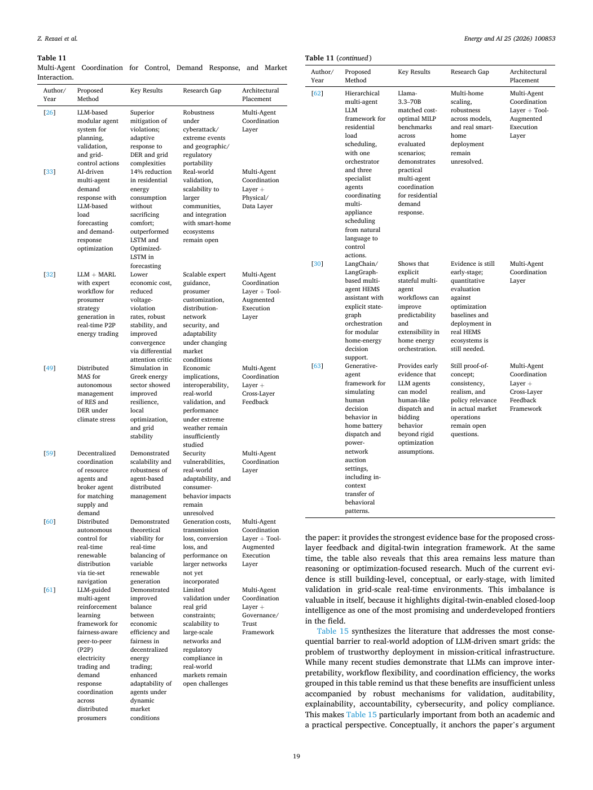
Table 12 · Tool-augmented optimization literatureمنابع بهینهسازی ابزارمحور
Evidence linking language reasoning to solvers,simulation and executable engineering tools.شواهد اتصال استدلال زبانی به حلگر،شبیهسازی و ابزار مهندسی.
Table 12 · PDF p. 20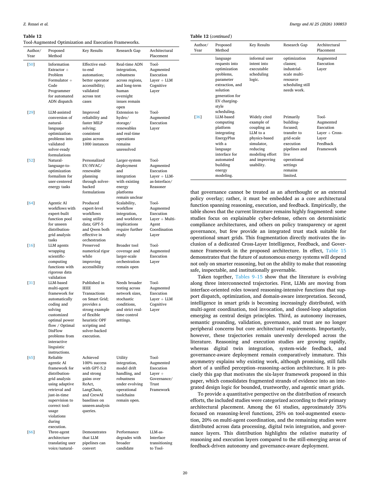
Table 13 · Semantic interoperability literatureمنابع تعاملپذیری معنایی
Knowledge representations,context abstraction and compliance roles.نقش نمایش دانش،انتزاع زمینه و انطباق.
Table 13 · PDF p. 21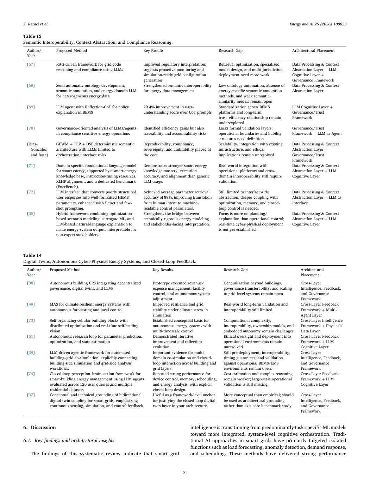
Table 14 · Twin and cyber-physical literatureمنابع دوقلو و سامانه سایبرفیزیکی
Virtual validation and feedback integration; different validation maturities.اعتبارسنجی مجازی و بازخورد با بلوغهای متفاوت.
Table 14 · PDF p. 21Table 15 · Governance and trust literatureمنابع حکمرانی و اعتماد
Safety,explainability,cybersecurity and human oversight coverage; the review identifies fragmentation.ایمنی،توضیحپذیری،امنیت و نظارت انسانی؛مرور پراکندگی را نشان میدهد.
Table 15 · PDF p. 22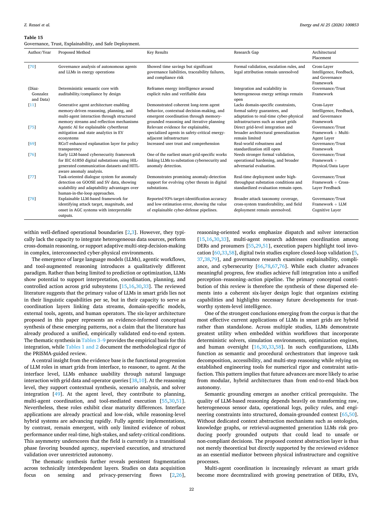
Critical analysis — reviewer assessmentتحلیل انتقادی — ارزیابی مرورگر
The search table ends in January2026 while the stated window is2019–2026 and some references are early-access/preprints. Reproducibility needs the exact search snapshot and included-study list; do not interpret the window as a complete audit of all2026 publications.جدول جستوجو در ژانویه۲۰۲۶ پایان مییابد،در حالی که بازه۲۰۱۹تا۲۰۲۶ و برخی منابع پیشچاپاند. بازتولید به تصویر دقیق جستوجو و فهرست مطالعات نیاز دارد؛نباید آن را ممیزی تمام آثار۲۰۲۶ دانست. Source · PDF p. 3
The architecture’s generality is a design argument rather than experimental evidence for our causal-diagnosis/recovery claim. Use the layer decomposition to organize contracts; test the actual contribution with controlled interventions and matched baselines.عمومیت معماری استدلال طراحی است،نه شاهد تجربی ادعای تشخیص علّی/بازیابی ما. تفکیک لایه برای سازماندهی قرارداد مناسب است و سهم واقعی باید با مداخله کنترلشده و خطمبنای همسان آزموده شود. Source · PDF p. 6Source · PDF p. 24
Role in our researchنقش مقاله در پژوهش ما
Why is it important to our research?چرا برای پژوهش ما مهم است؟
It closely overlaps the proposed combination of LLM orchestration,Twins,tools,agents and governance, so it is important both for architecture clarity and for limiting novelty claims.با ترکیب پیشنهادی مدل زبانی،دوقلو،ابزار،عامل و حکمرانی همپوشانی نزدیک دارد؛برای وضوح معماری و محدودکردن ادعای نوآوری مهم است. Source · PDF p. 1Source · PDF p. 10Source · PDF p. 24
What does it contribute to our research?چه سهمی در پژوهش ما دارد؟
It supplies an evidence-to-architecture taxonomy and a traceability framework. It does not supply a fitted dynamic SCM,our five-family degradation model or a validated causal intervention policy.ردهبندی شواهد تا معماری و چارچوب ردیابی فراهم میکند؛SCM پویای برازششده،پنج خانواده افت یا سیاست مداخله علّی معتبر پروژه ما را ارائه نمیکند. Source · PDF p. 6Source · PDF p. 10Source · PDF p. 24
How can we employ it?چگونه از آن استفاده کنیم؟
In P0/P7 map evidence,semantic context,diagnosis,agent coordination,solver calls,Twin validation and safety/execution contracts to explicit modules. In P9 use it to position the specific diagnosis-to-intervention contribution beyond generic DT+LLM integration.در P0/P7 شواهد،زمینه،تشخیص،هماهنگی،حلگر،اعتبارسنجی دوقلو و قرارداد ایمنی/اجرا را به ماژول صریح نگاشت کنیم.در P9 سهم مشخص تشخیص تا مداخله را فراتر از ادغام عمومی دوقلو و مدل زبانی جایابی کنیم. Source · PDF p. 10Source · PDF p. 11Source · PDF p. 12Source · PDF p. 24
Should we implement it as a baseline?آیا باید آن را بهعنوان خطمبنا پیاده کنیم؟
No executable baseline is required from this review itself. Use it as an architecture and novelty-collision reference; select and independently read its concrete primary methods before implementing any comparative algorithm. A six-layer-inspired variant would be our adaptation, not reproduction of a tested method from this paper.پیادهسازی خطمبنای اجرایی از خود این مرور لازم نیست.منبع معماری و همپوشانی نوآوری است؛پیش از الگوریتم مقایسه باید روش اولیه مشخص آن مستقل خوانده شود.نسخه الهامگرفته ششلایه اقتباس ماست،نه بازتولید روش آزموده این مقاله. Source · PDF p. 6Source · PDF p. 24
Original source pagesصفحات اصلی منبع
PDF page 1
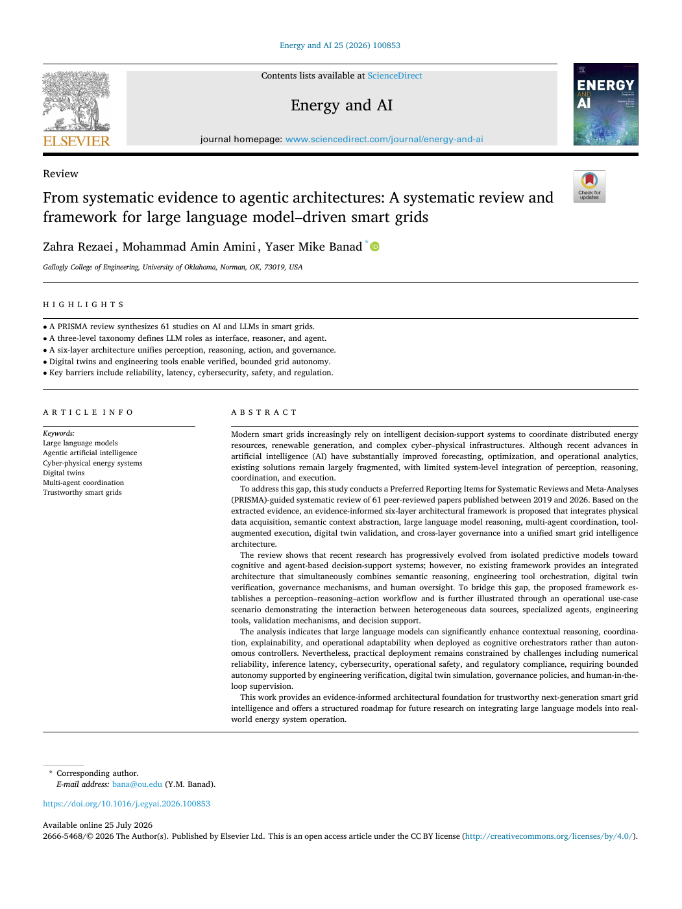
PDF page 2
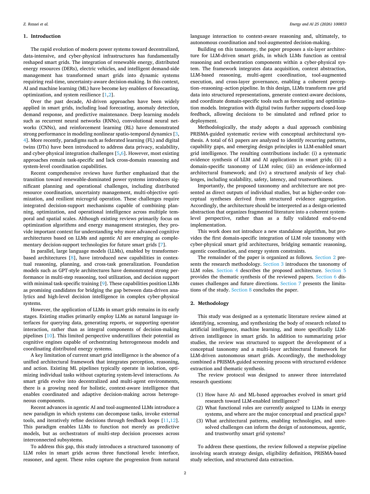
PDF page 4
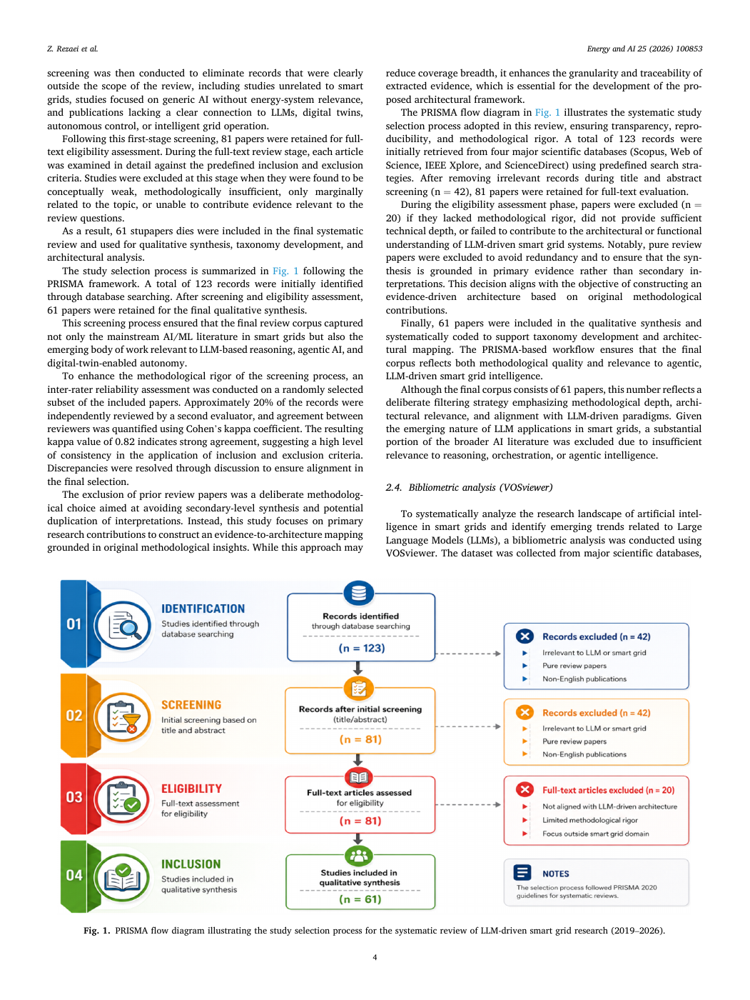
PDF page 5
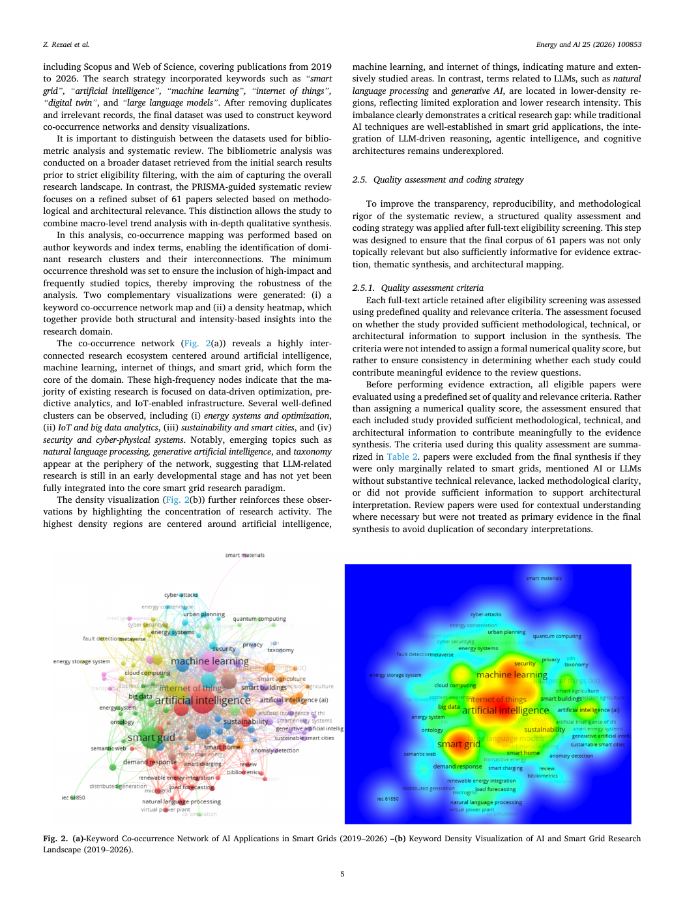
PDF page 8
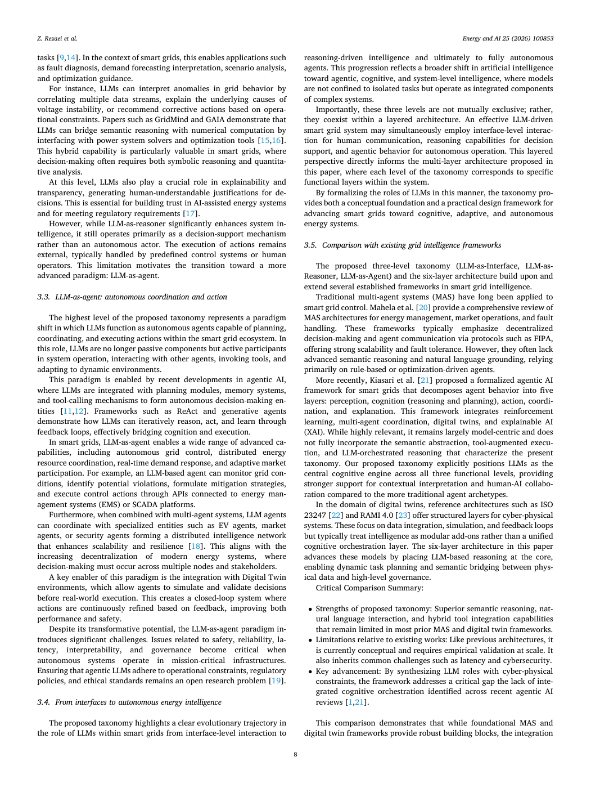
PDF page 10
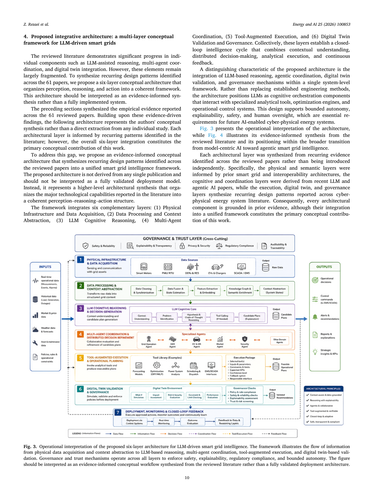
PDF page 11
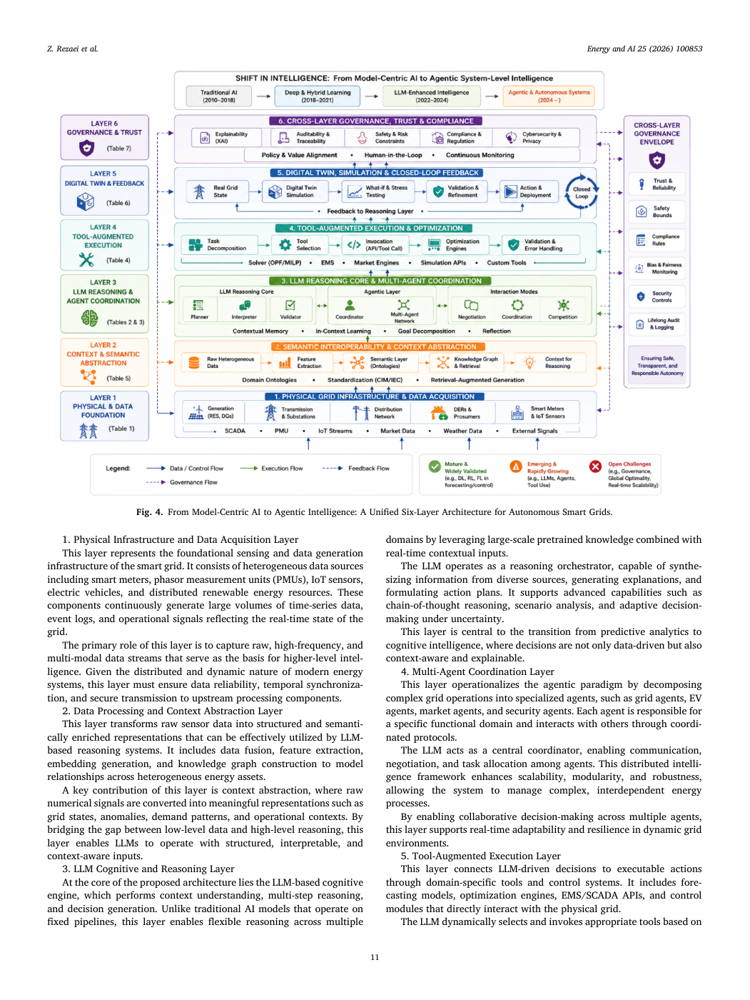
PDF page 12
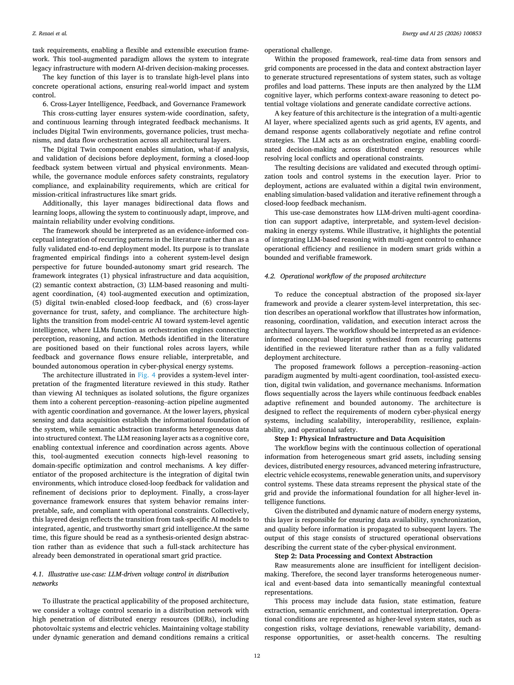
PDF page 13
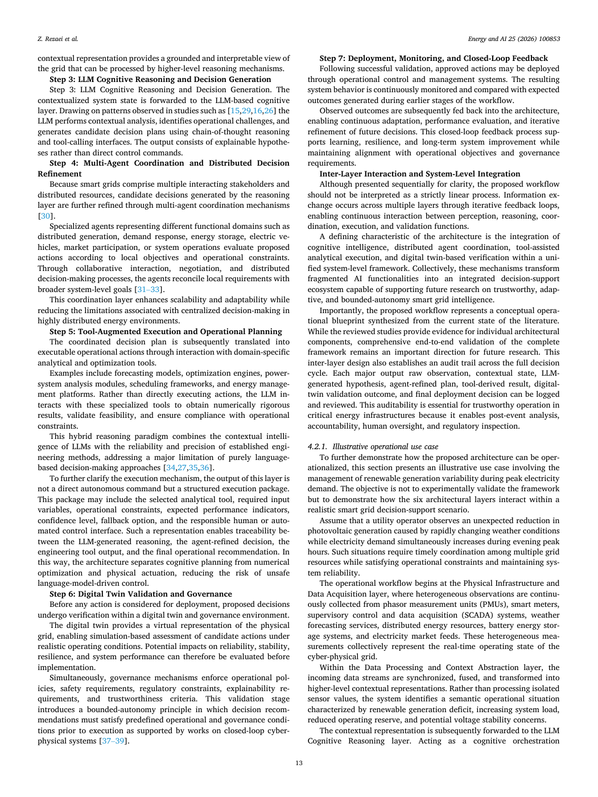
PDF page 16
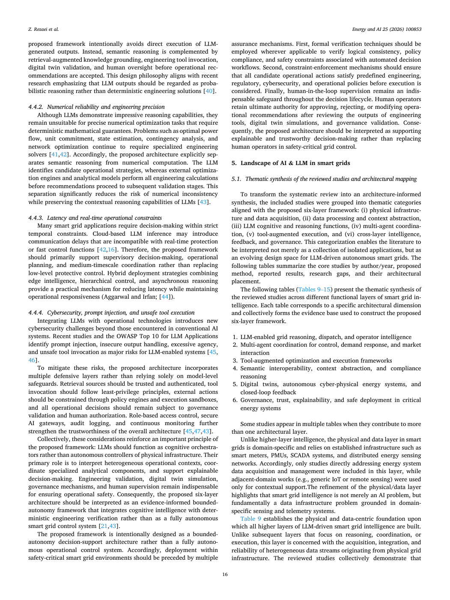
PDF page 23
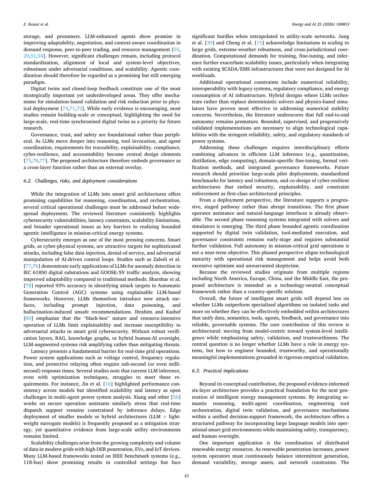
PDF page 24
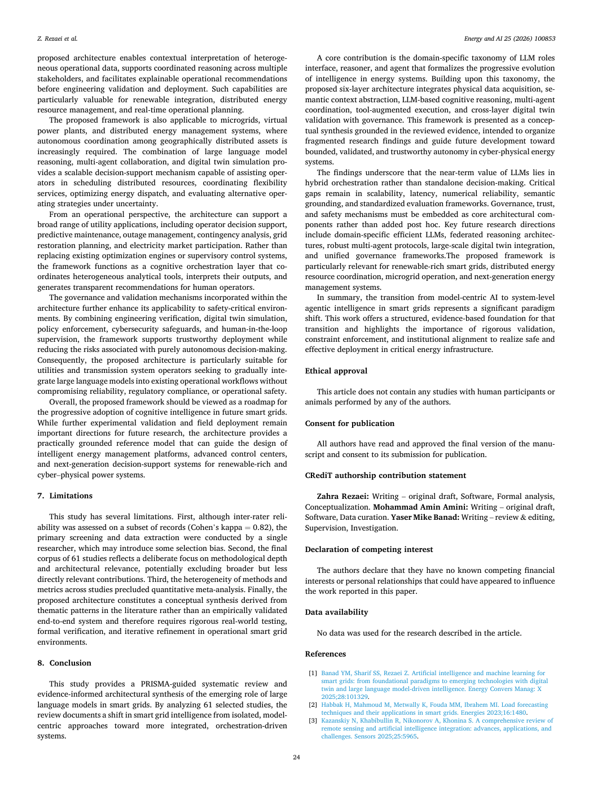
PDF page 25
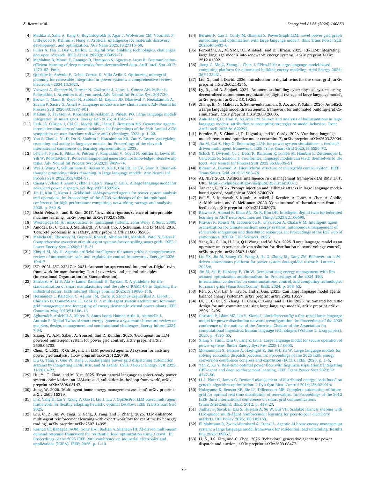
PDF page 26
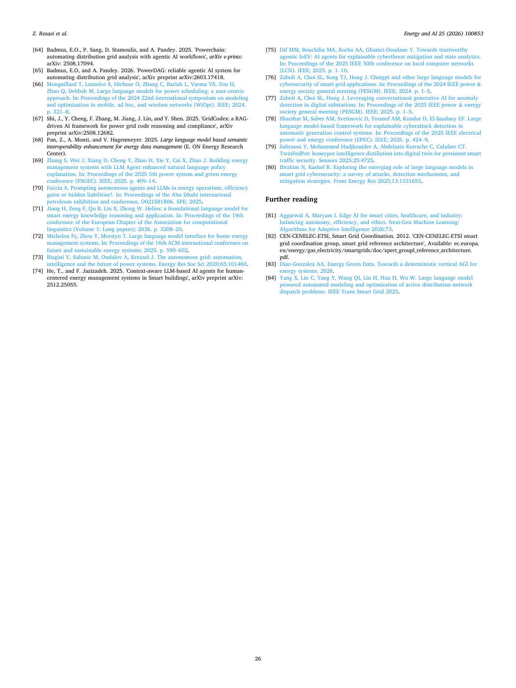
Full bibliographyکتابنامه کامل
Full bibliography transcribed from the source PDF. Original reference pages are the authority for formatting and extraction ambiguities; cited works were not independently analyzed just because they appear here.کتابنامه کامل از PDF منبع استخراج شده است. صفحه اصلی مرجع نگارش و ابهام استخراج است؛ درج منبع به معنی تحلیل مستقل آن اثر نیست.
Bibliography · PDF p. 24Bibliography · PDF p. 25Bibliography · PDF p. 26